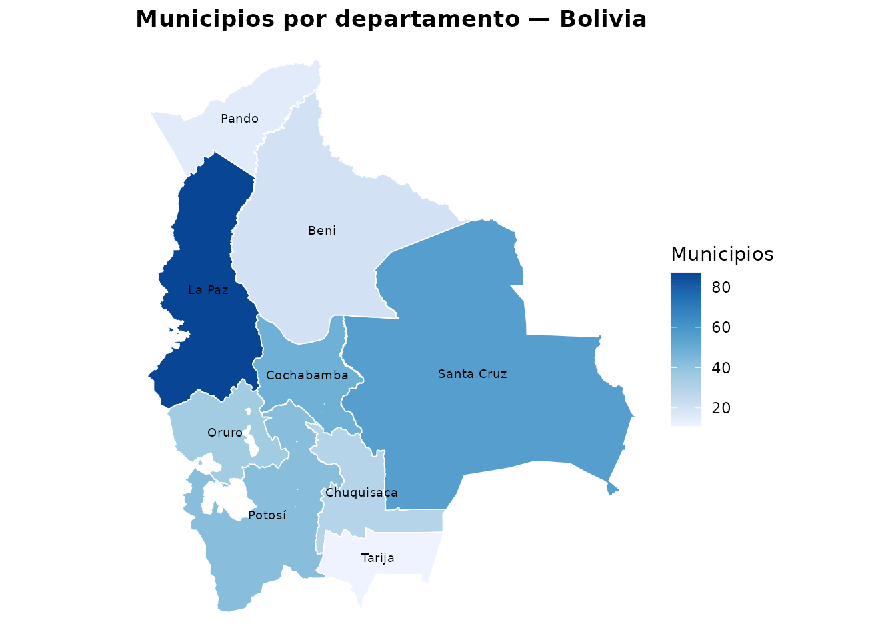
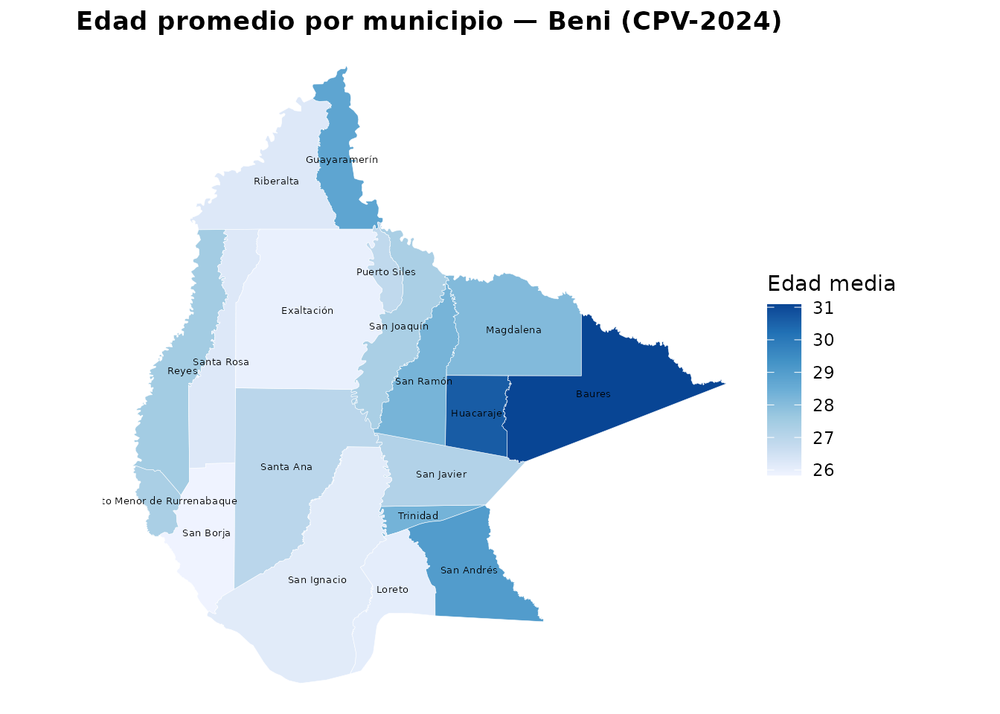
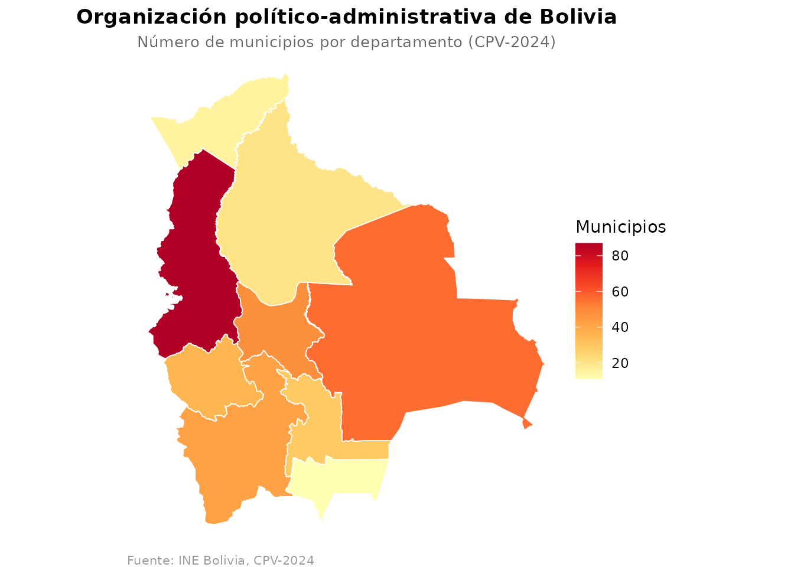
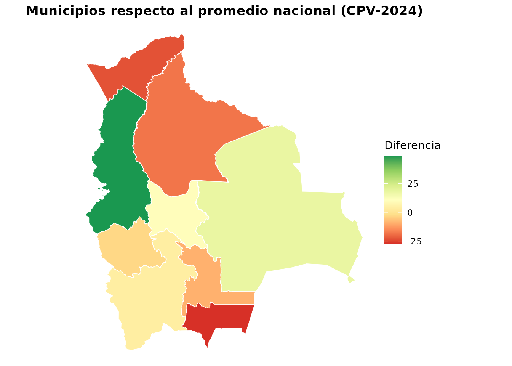

Visualización en mapas con censosbo
Source:vignettes/visualizacion-mapas.Rmd
visualizacion-mapas.Rmdcensosbo incluye dos funciones para crear mapas
coropléticos de Bolivia directamente desde R:
| Función | Nivel | Geometrías incluidas |
|---|---|---|
mapa_dep() |
9 departamentos | Sí — geo_departamentos
|
mapa_mun() |
336 municipios | Sí — geo_municipios
|
Ambas devuelven un objeto ggplot que se
puede personalizar con capas y temas adicionales.
Datos geográficos incluidos en el paquete
El paquete incluye dos objetos sf listos para usar sin
necesidad de descargar nada:
# 9 departamentos (objeto sf)
head(geo_departamentos, 3)
#> Simple feature collection with 3 features and 2 fields
#> Geometry type: MULTIPOLYGON
#> Dimension: XY
#> Bounding box: xmin: -69.64504 ymin: -21.51732 xmax: -62.17937 ymax: -11.84968
#> Geodetic CRS: WGS 84
#> idep nombre_dep geometry
#> 1 01 Chuquisaca MULTIPOLYGON (((-65.34567 -...
#> 2 02 La Paz MULTIPOLYGON (((-68.76707 -...
#> 3 03 Cochabamba MULTIPOLYGON (((-66.79542 -...
# 336 municipios del CPV-2024 (objeto sf)
head(sf::st_drop_geometry(geo_municipios), 3)
#> idep nombre_dep iprov nombre_prov imun nombre_mun
#> 1 01 Chuquisaca 01 Oropeza 01 Sucre
#> 2 01 Chuquisaca 01 Oropeza 02 Yotala
#> 3 01 Chuquisaca 01 Oropeza 03 PoromaLa tabla geo_bolivia (sin geometrías) tiene los 343
municipios con nombres y códigos oficiales:
head(geo_bolivia)
#> idep nombre_dep iprov nombre_prov imun nombre_mun
#> 1 01 Chuquisaca 01 Oropeza 01 Sucre
#> 2 01 Chuquisaca 01 Oropeza 02 Yotala
#> 3 01 Chuquisaca 01 Oropeza 03 Poroma
#> 4 01 Chuquisaca 02 Azurduy 01 Azurduy
#> 5 01 Chuquisaca 02 Azurduy 02 Tarvita
#> 6 01 Chuquisaca 03 Zudáñez 01 Zudáñez
mapa_dep() — nivel departamental
mapa_dep() recibe un data.frame con la columna
idep y la variable a visualizar. Las geometrías de los 9
departamentos están incluidas en el paquete.
Número de municipios por departamento
n_mun <- geo_bolivia |>
count(idep, name = "n_municipios")
mapa_dep(
n_mun,
"n_municipios",
titulo = "Municipios por departamento — Bolivia",
etiqueta_fill = "Municipios",
mostrar_nombres = TRUE
)
#> Warning: st_centroid assumes attributes are constant over geometries
#> Warning in st_point_on_surface.sfc(sf::st_zm(x)): st_point_on_surface may not
#> give correct results for longitude/latitude data
La Paz (80 municipios) y Santa Cruz (39) concentran casi la mitad de los municipios del país, reflejo de su extensión territorial y densidad histórica de asentamientos.
Porcentaje de población urbana por departamento (CPV-2024)
urbano_dep <- get_personas_2024(as = "tibble") |>
group_by(idep) |>
summarise(pct_urbano = mean(area == 1, na.rm = TRUE) * 100, .groups = "drop")
mapa_dep(
urbano_dep,
"pct_urbano",
titulo = "Porcentaje de población urbana por departamento (CPV-2024)",
etiqueta_fill = "% urbano"
)Evolución del alfabetismo 1992–2024
# Cambio en tasa de alfabetismo entre el censo 1992 y el CPV-2024
alfa_92 <- get_temporal(variables = "sabe_leer", anios = 1992) |>
group_by(departamento) |>
summarise(alfa_1992 = mean(sabe_leer == 1, na.rm = TRUE) * 100)
alfa_24 <- get_temporal(variables = "sabe_leer", anios = 2024) |>
group_by(departamento) |>
summarise(alfa_2024 = mean(sabe_leer == 1, na.rm = TRUE) * 100)
cambio <- inner_join(alfa_92, alfa_24, by = "departamento") |>
mutate(
idep = sprintf("%02d", as.integer(departamento)),
cambio = alfa_2024 - alfa_1992
)
mapa_dep(cambio, "cambio",
titulo = "Cambio en tasa de alfabetismo 1992–2024 (puntos porcentuales)",
etiqueta_fill = "Cambio (pp)",
paleta = "RdYlGn")
mapa_mun() — nivel municipal
mapa_mun() requiere las columnas idep,
iprov, imun y la variable a visualizar. El
argumento departamento limita el mapa a un
departamento.
Edad promedio por municipio — Beni (CPV-2024)
El departamento del Beni tiene datos pequeños (~24 MB). Con pocas líneas obtenemos un mapa municipal real con datos del CPV-2024:
# Descargar personas del Beni (~24 MB, se guarda en caché)
personas_beni <- get_personas_2024(
departamento = "Beni",
variables = c("p26_edad")
) |>
group_by(idep, iprov, imun) |>
summarise(edad_prom = mean(p26_edad, na.rm = TRUE), .groups = "drop") |>
collect()
#> ✔ Usando caché: persona_dep08.parquet
mapa_mun(
personas_beni,
"edad_prom",
departamento = "Beni",
titulo = "Edad promedio por municipio — Beni (CPV-2024)",
etiqueta_fill = "Edad media",
mostrar_nombres = TRUE
)
#> Warning: 1 municipio(s) en los datos no tienen geometría disponible.
#> ℹ Aparecerán como áreas grises en el mapa.
#> ℹ Son los 7 municipios del CPV-2024 sin cobertura cartográfica en la fuente.
#> Warning: st_centroid assumes attributes are constant over geometries
#> Warning in st_point_on_surface.sfc(sf::st_zm(x)): st_point_on_surface may not
#> give correct results for longitude/latitude data
Los municipios más jóvenes (como San Ignacio de Moxos y Loreto) contrastan con municipios con mayor proporción de adultos mayores en las capitales provinciales.
Acceso al agua por cañería — Santa Cruz
agua_sc <- get_viviendas_2024(departamento = "Santa Cruz", as = "tibble") |>
group_by(idep, iprov, imun) |>
summarise(
pct_agua = mean(v07_aguapro == 1, na.rm = TRUE) * 100,
.groups = "drop"
)
mapa_mun(
agua_sc,
"pct_agua",
departamento = "Santa Cruz",
titulo = "Viviendas con agua por cañería — Santa Cruz (CPV-2024)",
etiqueta_fill = "% con agua",
mostrar_nombres = TRUE
)Tasa de alfabetismo — Oruro
alfa_oruro <- get_personas_2024(
departamento = "Oruro",
variables = c("p40_lee"),
as = "tibble"
) |>
group_by(idep, iprov, imun) |>
summarise(
alfa = mean(p40_lee == 1, na.rm = TRUE) * 100,
.groups = "drop"
)
mapa_mun(
alfa_oruro,
"alfa",
departamento = "Oruro",
titulo = "Tasa de alfabetismo por municipio — Oruro (CPV-2024)",
etiqueta_fill = "% sabe leer"
)Personalización
Las funciones devuelven un objeto ggplot
estándar que se puede modificar con cualquier capa de
ggplot2:
n_mun <- geo_bolivia |>
count(idep, name = "n_municipios")
mapa_dep(
n_mun,
"n_municipios",
paleta = "YlOrRd",
etiqueta_fill = "Municipios"
) +
labs(
title = "Organización político-administrativa de Bolivia",
subtitle = "Número de municipios por departamento (CPV-2024)",
caption = "Fuente: INE Bolivia, CPV-2024"
) +
theme(
plot.title = element_text(hjust = 0.5, face = "bold"),
plot.subtitle = element_text(hjust = 0.5, size = 10, color = "grey40"),
plot.caption = element_text(hjust = 0, size = 8, color = "grey60")
)
Paletas recomendadas
Las funciones detectan automáticamente si la variable es continua o
categórica y aplican la escala correspondiente. Se puede sobrescribir
con paleta:
| Tipo de variable | Paleta recomendada | Argumento |
|---|---|---|
| Continua, ascendente | Blues, YlOrRd, Oranges | paleta = "Blues" |
| Continua, divergente | RdYlGn, PuOr, RdBu | paleta = "RdYlGn" |
| Categórica (≤ 8 cat.) | Set2, Set3, Pastel1 | paleta = "Set2" |
El siguiente ejemplo usa una paleta divergente con una variable derivada de datos reales: la diferencia entre el número de municipios de cada departamento y el promedio nacional.
n_mun_dif <- geo_bolivia |>
count(idep, name = "n_municipios") |>
mutate(diferencia = n_municipios - mean(n_municipios))
mapa_dep(
n_mun_dif,
"diferencia",
paleta = "RdYlGn",
titulo = "Municipios respecto al promedio nacional (CPV-2024)",
etiqueta_fill = "Diferencia"
)
Flujo completo: agregar → mapear
El patrón habitual es: descargar datos → agregar por unidad geográfica → visualizar en mapa:
# Porcentaje de personas con educación superior por municipio — Potosí
get_personas_2024(
departamento = "Potosí",
variables = c("nivel_edu")
) |>
filter(!is.na(nivel_edu)) |>
count(idep, iprov, imun, nivel_edu) |>
collect() |>
group_by(idep, iprov, imun) |>
mutate(pct = n / sum(n) * 100) |>
filter(nivel_edu == 4) |>
mapa_mun(
datos = _,
variable = "pct",
departamento = "Potosí",
titulo = "% con educación superior — Potosí (CPV-2024)"
)